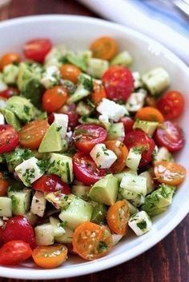
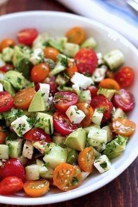

2882 leckere Rezepte fürs Abendessen - REWE
2021.06.24 14:33
Markt wählen Payback Anmelden Märkte & Angebote
Entdecken Sie Angebote in ihrem REWE Markt!
Online bestellenSie bestellen Online, wir liefern nach Hause!
Rezepte & ErnährungRezept, Ernährung und Kochinspiration
rewe.de Anmelden Markt wählen Jobs bei REWE REWE.de Rezepte & Ernährung Willkommen Rezepte Ernährungspläne Ernährung Wissen mit Nährwert https://www.rewe.de/rezeptsammlung/abendessen/Abendessen für jeden Geschmack
Vorherige Rezepte anzeigenMetzgerbratwurst-Spiesse mit Bacon & Zwiebeln
20 min Einfach Rezept des Tages Bitte anmelden , um das Rezept zu speichern. In Meine Rezepte gespeichert.Glutenfreie Chicken- und Gemüsenuggets in Parmesan-Cornflakes-Panade
40 min Einfach Bitte anmelden , um das Rezept zu speichern. In Meine Rezepte gespeichert.Sushi Bowl mit Lachs & Avocado
55 min Mittel Bitte anmelden , um das Rezept zu speichern. In Meine Rezepte gespeichert.Spargelsuppe mit Ei
75 min Einfach Bitte anmelden , um das Rezept zu speichern. In Meine Rezepte gespeichert.Spare Ribs mit Kartoffelspießen vom Grill
50 min Einfach Bitte anmelden , um das Rezept zu speichern. In Meine Rezepte gespeichert.Grünkohlsuppe
50 min Einfach Bitte anmelden , um das Rezept zu speichern. In Meine Rezepte gespeichert.Grünkohlsalat mit knuspriger Entenbrust und karamellisierten Nüssen
75 min Mittel Bitte anmelden , um das Rezept zu speichern. In Meine Rezepte gespeichert.Grünkohlsalat mit Hackbällchen
60 min Mittel Bitte anmelden , um das Rezept zu speichern. In Meine Rezepte gespeichert.Grünkohleintopf
75 min Einfach Bitte anmelden , um das Rezept zu speichern. In Meine Rezepte gespeichert.Grünkohl mit Topinambur und pochiertem Ei
45 min Mittel Bitte anmelden , um das Rezept zu speichern. In Meine Rezepte gespeichert.Grünkohl Rheinische Art
60 min Einfach Bitte anmelden , um das Rezept zu speichern. In Meine Rezepte gespeichert.Grünkohl norddeutsche Art
2 h 0 min Einfach Bitte anmelden , um das Rezept zu speichern. In Meine Rezepte gespeichert.Grünkohl-Cashew-Pesto
20 min Einfach Bitte anmelden , um das Rezept zu speichern. In Meine Rezepte gespeichert.Grünkohl mit Bratkartoffeln und Kasseler
60 min Einfach Bitte anmelden , um das Rezept zu speichern. In Meine Rezepte gespeichert.Grünkern-Bratlinge mit Kräuterquark
35 min Mittel Bitte anmelden , um das Rezept zu speichern. In Meine Rezepte gespeichert.Grünkern-Bratlinge mit Radieschendip
13 h 5 min Einfach Bitte anmelden , um das Rezept zu speichern. In Meine Rezepte gespeichert.Grünes Thai Curry mit Hähnchen und Aubergine
30 min Mittel Bitte anmelden , um das Rezept zu speichern. In Meine Rezepte gespeichert.Grünes Fischcurry mit Reis
30 min Mittel Bitte anmelden , um das Rezept zu speichern. In Meine Rezepte gespeichert.Grüner und weißer Spargel mit Lachs im Pergamentpapier
40 min Mittel Bitte anmelden , um das Rezept zu speichern. In Meine Rezepte gespeichert.Grüner Spargel mit Zitronen-Buttersauce und jungen Kartoffeln
55 min Einfach Bitte anmelden , um das Rezept zu speichern. In Meine Rezepte gespeichert.Grünes Thai Curry
40 min Einfach Bitte anmelden , um das Rezept zu speichern. In Meine Rezepte gespeichert.Grüner Spargel auf Rahmfladen
1 h 40 min Mittel Bitte anmelden , um das Rezept zu speichern. In Meine Rezepte gespeichert.Grüner Salat mit Apfel-Ei-Vinaigrette
30 min Einfach Bitte anmelden , um das Rezept zu speichern. In Meine Rezepte gespeichert.Grüner Gemüse-Kräuter-Salat
25 min Mittel Bitte anmelden , um das Rezept zu speichern. In Meine Rezepte gespeichert.Grüner Brokkoli-Couscous mit Hähnchen
30 min Einfach Bitte anmelden , um das Rezept zu speichern. In Meine Rezepte gespeichert.Grüner Salat mit Cranberries, Avocados und Walnüssen
15 min Einfach Bitte anmelden , um das Rezept zu speichern. In Meine Rezepte gespeichert.Grüner Spargel mit Erdbeer-Salsa
35 min Einfach Bitte anmelden , um das Rezept zu speichern. In Meine Rezepte gespeichert.Grüner Spargel aus dem Ofen
13 min Mittel Bitte anmelden , um das Rezept zu speichern. In Meine Rezepte gespeichert.Grüner Burger mit Avocadocreme & Rucola
35 min Einfach Bitte anmelden , um das Rezept zu speichern. In Meine Rezepte gespeichert.Grüner Spargel-Couscous mit Garnelen
85 min Einfach Bitte anmelden , um das Rezept zu speichern. In Meine Rezepte gespeichert.Grüner Spargel Tempura mit Dip
45 min Einfach Bitte anmelden , um das Rezept zu speichern. In Meine Rezepte gespeichert.Grüner Spargel Caprese
20 min Einfach Bitte anmelden , um das Rezept zu speichern. In Meine Rezepte gespeichert.Grüner Kokos-Wok
25 min Einfach Bitte anmelden , um das Rezept zu speichern. In Meine Rezepte gespeichert.Grüner Kartoffelsalat
45 min Einfach Bitte anmelden , um das Rezept zu speichern. In Meine Rezepte gespeichert.Grüner Blätterteigkuchen
50 min Mittel Bitte anmelden , um das Rezept zu speichern. In Meine Rezepte gespeichert.Grüne Winter-Bowl mit Cheddar
30 min Einfach Bitte anmelden , um das Rezept zu speichern. In Meine Rezepte gespeichert. Mehr Rezepte anzeigenKeine Ergebnisse
Leider konnte kein passendes Rezept gefunden werden. Bitte versuchen Sie es mit einem anderen Suchbegriff erneut oder erweitern Sie Ihre Kategorieauswahl.
Weitere Rezepte für Abendessen & Mittagessen entdecken
Abendbrot Rezepte Feierabend Rezepte Low Carb Abendessen Rezepte
Diät Abendessen Rezepte Vegetarisches Abendessen Rezepte
Mittagessen Kalorienarmes Mittagessen Rezepte
Fitness Mittagessen Rezepte Muskelaufbau Mittagessen Rezepte
Angebote
Angebote im Markt Angebote im Lieferservice Unsere Services PAYBACK GewinnspieleOnline einkaufen
Lebensmittel online kaufen So funktioniert der Lieferservice Abholservice Marktplatz Produkt-Übersicht Für GeschäftskundenÜber REWE
Nachhaltigkeit Das Unternehmen Karriere Ausbildung Presse KontaktHilfe & Sonstiges
Fragen und Antworten Lebensmittel-Lexikon Rezepte-Verzeichnis Öffnungszeiten & Marktsuche Was koche ich heute? Nutri-ScoreRechtliches
AGB Datenschutz Impressum Nutzungsbedingungen Privatsphäre-Einstellungen Hinweise nach BattG Hinweise auf ElektroGPartnerangebote
REWE Reisen REWE To Go REWE Kartenwelt REWE Blumen REWE Foto Weinfreunde ZooRoyal Kölner WeinkellerREWE App
Zahlungsarten
Alle Preise in Euro (€) inkl. gesetzlicher Mehrwertsteuer, zuzüglich Versandkosten, Pfand und optionaler Servicegebühren.
* Die dargestellten Angebote sind unter Umständen nicht in allen Märkten verfügbar. In Einzelfällen können die Preise zudem von den online bestellbaren Angeboten unter https://shop.rewe.de abweichen.
- 21 schnelle Rezepte für einen leckeren Feierabend .
- Kochbuch: Schnelles Abendessen | EAT SMARTER
- Schnelles Abendessen | Leckere Kochideen | Kitchen Stories
- Rezepte für ein schnelles Abendessen | Chefkoch.de
- Schnelle Mittagessen - 6 Rezepte unter 30 Minuten • Koch-Mit
- [Schnell & einfach] 3112 leckere Rezepte zum Abendessen .
- Gesunde-Abendessen-Rezepte | Swissmilk
- 2871 leckere Rezepte fürs Abendessen - REWE
- 900+ ABENDESSEN SCHNELL & EINFACH . - Pinterest
- Abendessen-Rezepte - einfach und lecker | DasKochrezept.de
- 21 schnelle Rezepte für einen leckeren Feierabend .
- Kochbuch: Schnelles Abendessen | EAT SMARTER
- Schnelles Abendessen | Leckere Kochideen | Kitchen Stories
- Rezepte für ein schnelles Abendessen | Chefkoch.de
- Schnelle Mittagessen - 6 Rezepte unter 30 Minuten • Koch-Mit
- [Schnell & einfach] 3112 leckere Rezepte zum Abendessen .
- Gesunde-Abendessen-Rezepte | Swissmilk
- 2871 leckere Rezepte fürs Abendessen - REWE
- 900+ ABENDESSEN SCHNELL & EINFACH . - Pinterest
- Abendessen-Rezepte - einfach und lecker | DasKochrezept.de
 
